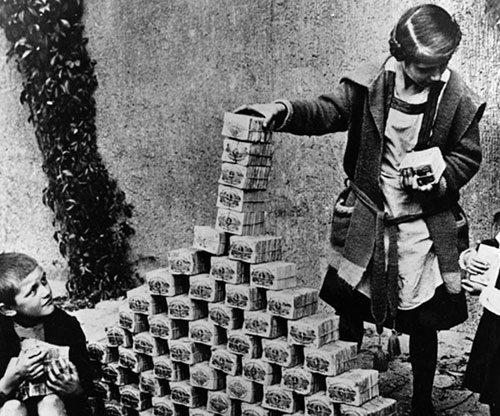
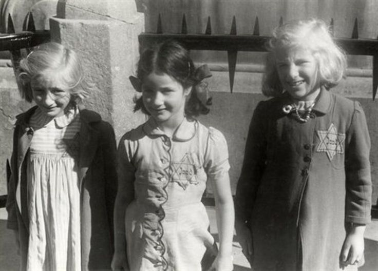

What Leads to Genocide?
Genocide is a touchy subject. In society, most countries and societies are willing to recognize what has passed, but some are still in denial of the most widely known and factually supported genocides, like the Holocaust, or Armenian. Putting aside the fact that some countries outright deny the mere existence of genocide whether committed by them or not, we are left with countries that gloss over the in-depth facts of this horrible atrocity. To better understand what makes a genocide happen, to understand what drives a people to kill of their neighbor, we must look deeper into what has happened before us. By understanding what leads people to committing these crimes, we can prevent genocide from happening before it even becomes a threat.
Even though not all people are bad, I propose all humans have the capability to do horrible things when pushed to the edge. The threshold for which causes someone to reach a genocidal level of anger and fear is entirely dependent on the person. For a whole country to reach this level there are major steps that must be taken. These can be broken down, very basically, into a few stages.
CGP Grey highlights the steps to ruling a country as, to keep key supporters on your side, control the countries resources, and to minimize key supporters. To elaborate, the idea is to keep the people needed to run the country close to you, while trimming away the people not needed. Once the select few are decided on, the best way to keep them loyal is to pay them well. Your supporters help control the countries money and resources, allowing you to maintain control. The issue comes when the country becomes too poor for the ruler to pay his supporters, or when the people revolt because of living conditions.
This is the time of revolutions; when a government fights for control, or is destroyed by the next thing willing to take its place. Here is where we usually see a government using all the tools they have at their disposal, genocide being one of the more desperate measures. A modern-day example of genocide used as a tool would be current North Korea. The only people living well in that society are the governmental elite. The Kim family make sure that their supporters are well compensated, and in turn they keep everyone under them in check. This includes the use of death camps.
 Economic failure has been a reoccurring theme in pre-genocidal regimes. Germany had the post WWI reparations, which caused wide spread devaluation of money. The country’s economic state became so bad that the exchange rate rose to 4,200,000,000,000 marks per dollar by the end of 1923. (Rare, 1) It became more economic to use the paper cash as firewood or children’s toys, than to buy a loaf a bread. Economic collapse like this is extreme, but not isolated to just post war Germany. During the Armenian genocide, the bankrupt Ottoman Empire was facing ruin. The empire declared the killings of Armenians legal, and whoever being the killer received 95% of the deceased’s wealth. The latter 5% would be taken by the government. (Ghazanchyan, 1) The pre-genocidal economic state of the Ottoman Empire was largely a factor that instigated the killings.
A people facing a poor economy become stressed. The loss of jobs, life savings, investments, and houses is taxing on a family. Stress levels rise, relationships are pushed to their limits; anxiety, and lowered self-esteem becomes an issue. (American, 1) People become fearful of what the future holds, a trait that is not good for a country to have. It is at this point that people look for a solution to their issues. (Acemoglu, 1) This could be a political figure that says he or she will fix the current issues, or a leader promising change in a radical way like Pol Pot, who, in the case of the Cambodian genocide promised a better future for the country.
The leaders that now gain power are now faced with the issue of how to improve the country. The steps needed to fix the problem vary depending on how dire the situation is. The promise of support could simply fix the situation, or another more radical action might need to be taken. A solid example of how to fix an unsure economy would be to look at what FDR did in the wake of the great depression. Banks were failing, leading people to not deposit their money, in turn making the situation worse. His course of action was to close the banks for four days. During this time, the countries banks were examined, and given the approval to open back up when deemed financially secure. This alone boosted the morale of the country. The security of their money now rode on the trust of their president, government, and the bank instead of just the bank. His other course of action was to establish the FDIC, which insured everyone there deposit up to $5,000. (Simkin, 1) These actions did not fully solve the great depression, but helped pull the country in the right direction.
As a way of coping with the tough times that the country is facing, people try to put blame someone for their issues. (Stanton, 1) In the case of genocide though, the blame is pinned on a specific subset of the population. This can be done by government officials, or the countries people themselves. The only requirement of the oppressed is that they be viewed as not being affected by the current economic turmoil, or that they be the cause of the turmoil. This could be how the Jews were thought to be economically prospering in post-world war Germany, or how the Armenians were thought to be sympathizing with the Russians; possibly aligning more with them then their own country. The Tutsi were discriminated against because of the Europeans enforced ideas of their racial superiority.
Governments in specific like to pin blame because it keeps the focus away from them. If the people felt that the government was any way responsible for their suffering, it would lead to protests. So, for the people in power pinning the blame is an easy way to keep as few people as possible angry at them. Many countries may dissolve to the point of blaming a group or race; that does not mean that they will become genocidal. This is the step, though, where we see governments go “all in”.
 For genocide to occur, there must be organization. In Germany, it was the Nazi government, In the Ottoman Empire it was the ruling Government, and in Cambodia it was a communist revolutionary group that took power. These architects of genocide must create a way to distinguish between the general population and the group attacked. (UN News Center) During the Nazi genocide, the Jews were marked with the Star of David. By marking the Jews, the population knew where to focus their anger, causing the Jews to be attacked on the streets or turned away from businesses. The markings help organized attacks take place, for example Kristallnacht, where Synagogues were burned and Jewish homes and businesses were vandalized.
This is the point where people need to be on board with the idea of imprisoning and killing their discriminated neighbors. People are faced with the question of deciding whether to choose to agree with the discrimination, or face the consequences of becoming a sympathizer. The markings previously placed are now used to carry out the mass killings that make a genocide. In most cases, we see people being rounded up before killed off, most notably in Nazi Germany, or the oppressed are attacked where they live, like in Cambodia. An example where both took place would be in the Ottoman Empire during the Armenian genocide where citizens were encouraged to kill, but extensive use of death marches and killing fields were also played a factor.
As the genocide comes to a close, the government tries to hide what happened by covering their traces. They destroy facilities, hide bodies, and eliminate documentation, if any was even kept. (Stanton, 2) The government is likely to deny that the event has even taken place, citing lack of evidence. This can be seen in the aftermath of the Armenian genocide; the Turkish government still to this day denies that the killings took place.
Although the past cannot be changed, we can take what we know about these atrocious and use it to prevent such a thing from happening again. We need to look out and see what is happening in the world today, in countries like Syria and North Korea, and do our best to mitigate the damage that has already been done. The future can only be changed if we try to do something about it.